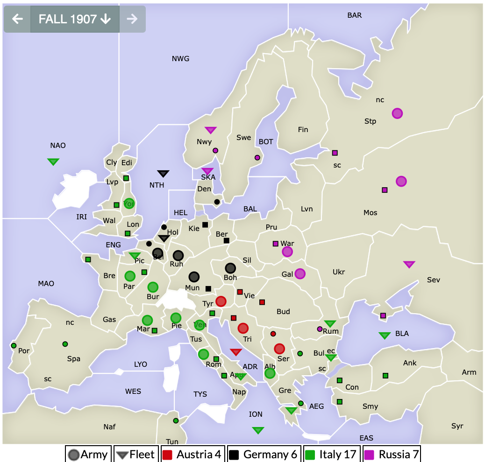
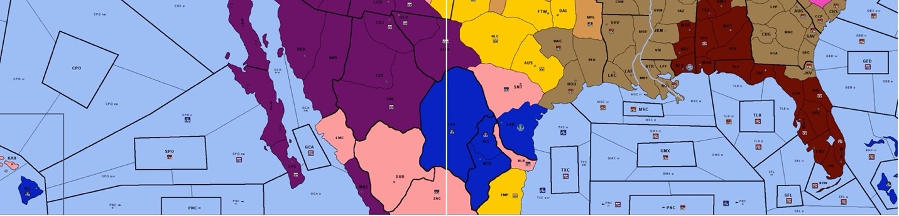
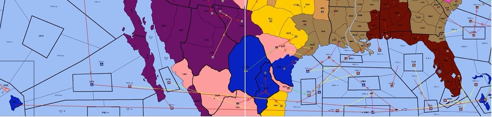

|
Welcome to the first in my series of articles on unconventional tactics! I won’t claim to have invented any of these (in fact I definitely didn’t invent this one, as it was published in the W1995A issue of The Zine), but I haven’t seen anyone else using them either. For the most part I’d say they’re mostly useful on larger maps, and especially variants that use the relatively new Sealanes concept (see Divided States at vDip, for example). That’s not to say that they can’t be used on a Classic map. Have you ever found yourself in a situation where there was a 50-50 guess that you really REALLY needed to get right? The simplest example is where you as the attacker have one unit that is bordering two of your opponent’s supply centers. And your opponent has one unit to defend those two supply centers. You just have to guess the opposite one than your opponent does. There are diplomatic solutions to the puzzle. You can try to get a sense for which he’ll defend by talking to him. You can judge which is more vital to his long-term interests, and attack the other. You can talk to his allies to see if they’ll give you a clue. You could study his past moves and try to determine which he’ll elect to defend. In situations like these, I often find myself overanalyzing and inevitably make the wrong decision. So, I’ve taken to just flipping a coin to solve these situations. The beauty of Diplomacy is that all orders are revealed simultaneously. There are not sequential turns, where one player moves, followed by the next, and around the table. You have to make, and reveal, your decisions at the same time your opponents are making theirs. But what if I told you there was a way to rig the coin flip. A way to wait and see which supply center your opponent has chosen to defend, and then enter your orders. And it’s not even cheating! All the online judges let you get away with it! You won’t get blacklisted, or booted from any tournaments! Take this (admittedly contrived) scenario for example, using the Classic map. Italy controls 17 centers, and has just taken his 18th. It’s now the Autumn turn, so the rest of the board has 1 turn to rally together and take a center back. If they do, they have a great chance of stopping Italy, because he’s overextended himself, especially on the Turkish and English fronts. But those rallies will take some time to coalesce; for now, the only centers that are vulnerable are Edinburgh and London, defended by a single army in Yorkshire. But the only allied unit bordering them is a lone German fleet in the North Sea. It’s the classic 50-50 scenario. But what if 50-50 isn’t good enough? The fate of the game is on the line! Can you find a solution that nets a center for Germany, with 100% certainty, giving Russia time to rally and retake Rumania and then the rest of Turkey? Have I given enough hints yet? 
I call it the Attacking Retreat [note: Matthew Self referred to it as the “Forward Retreat” in the previously-referenced Zine article]: instead of attacking during the Diplomacy/Movement phase like everyone else does, bide your time and wait to attack until the Retreats phase. It’s perfectly legal. By the time the Retreats phase rolls around, you’ll have 100% knowledge of what your opponent has ordered. If Russia uses his fleets in Norway and Skaggerak to attack the German fleet in the North Sea, the German can retreat to whichever of Edinburgh or London that the Italian chose not to defend. As an added bonus: when the Italian opens his web browser to check the status of the game after moves have processed, he’ll be elated to see that both London and Edinburgh are still in his possession. The website may even tell him that he has achieved 18 Supply Centers. But then he’ll continue studying the board and endure the massive gut punch of seeing that the German still has a retreat pending. Or even better: he’ll think he won the game, close his web browser in celebration, and come back a couple days later to see that he has moves due. What!? I already won that game! The key to executing this tactic is having an ally whom you place a larger amount of trust in than is typical to Diplomacy games. There are rules that prevent you from dislodging, and therefore retreating, your own units. But the rules don’t prevent you from dislodging the units of someone you’re allied with! In this scenario, the entire board has rallied to stop a solo attempt, so it’s easy to trust that everyone will cooperate, at least as long as the solo is still a threat. But what if Italy had a fleet in Yorkshire instead of an army. And somehow Italy anticipated the German/Russian move. Italy could be ultra-sneaky and have his fleet provide a support-hold for the German fleet. Talk about a hostile support! Now the German isn’t dislodged, doesn’t get a retreat, and Italy scores his victory! Of course there’s a simple counter-tactic to this: if the German orders his fleet to move somewhere (be it London, Edinburgh, Skaggerak, or Norway), the support-hold order will be invalidated, and he’ll still get his precious retreat. Earlier I said that this tactic is most useful in larger maps. I say that because larger maps (in particular, the 50-player Divided States map that I’ve enjoyed playing so much lately) lend themselves more to strong “stick together to the end” alliance blocs. Take this example from the game “Choose Your State” on the Divided States map, where I played as Alaska (light pink units). I had a strong alliance with Oregon (blue) and California (purple). We’d had a long-term détente with Tennessee (light brown) and Alabama (dark reddish brown) and were focused on getting fleets into the Atlantic to fight Delaware (bright pink). But we didn’t have many ports on the east coast, so we were building in the Pacific and pushing through the Panama Canal (and also the Northwest Passage, on the northern edge of the map). At some point, Tennessee/Alabama decided to stab us (through a pretty clever deception where we briefly thought Alabama was stabbing Tennessee), and then there was an all-out naval war to take control of the greater Gulf of Mexico. Fast forward a couple years, and here was the map: 
There was a continued back-and-forth over GMX and it’s associated sealanes. We also had a desire to get into SFL and be able to start putting pressure on the supply centers in Florida. But we desperately needed to get more fleets into the Gulf (we were currently outnumbered 11 to 8), but the only ways into the Gulf (for us) was through the bottleneck of the Panama Canal or around the heavily contested southern tip of Florida. (Okay we could build fleets in Laredo too, but that was tough to orchestrate with Tennessee holding Houston). If we attempted to attack somewhere using our fleets in the Panama Canal, but the attack failed, our subsequent fleets trying to navigate into the Canal would bounce, and we’d still be outnumbered. So, we needed to figure out a way we could attempt some attacks on strategic territories, but even if the attacks failed, still get more fleets into the theater. Hence the attacking retreat! The three of us each had fleet in the Canal (the overseer zone plus it’s two sealanes). On the Pacific side of the Canal, we have a veritable rainbow of four fleets ready to follow them through. So, while Alaska’s fleet in PNC attempted an attack on SFL, we attacked PNC with an Oregonian fleet, supported by a Californian fleet. Similarly, while we attacked MSCw from GMX and tried to move Oregon’s fleet in PNCs up to GMX, we attacked PNCs using an Alaskan fleet supported by a Hawaiian fleet. There was a third attacking-retreat too: a Californian fleet supported Oregon’s move from PNCs to GMX, so if Alaska’s attack from GMX to MSCw failed, that fleet could still retreat forward. The attacks on MSCw and GMX ended up succeeding, but the attack on SFL failed. Despite this, the Alaskan fleet that failed it’s attack on SFL was still able to attack GMXs during the retreats phase. Two attacks for the price of one! We got two more fleets into the Gulf so we were now only outnumbered 11 to 10. 
We eventually ended up taking the whole Gulf of Mexico, but ended up drawing because Alabama/Tennessee formed an alliance with Delaware/Maryland/Kansas/Nebraska that we couldn’t break via diplomatic means. Although we could’ve made a little progress inland, there was a stalemate line we had no hope of getting past. In summary: I’ve noticed that Diplomacy players as a whole don’t take advantage of the Retreats phase enough. During the Retreats phase, you have perfect knowledge of what your opponent ordered during the Movement phase, and can often make uncontested advances after seeing what they chose to leave vulnerable. You can even attempt two attacks on the same turn. Can’t decide which spot to attack? Attack them both! All it requires is having a trusted ally behind your front line who’s willing to dislodge your units for you.
If you wish to e-mail feedback on this article to the author, and clicking
on the envelope above does not work for you, feel free to use the
|